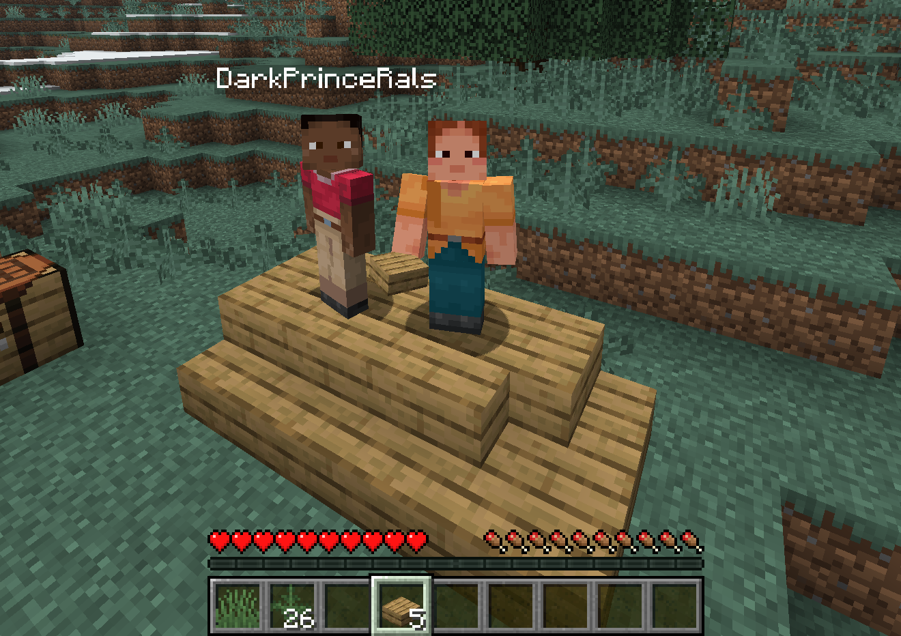

About
irongingot is a fork of bareiron : a minimalist Minecraft server designed to run on low-spec hardware. It keeps the tiny memory footprint of the original while adding features like doors, stairs, trees, better terrain generation, and a config file so you don't have to recompile to change settings.